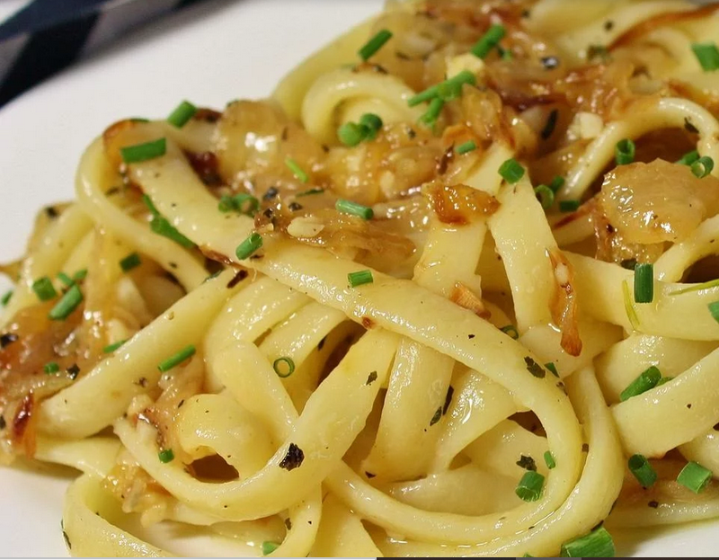

Onion Pasta

PREP Quick COOK Quicker TOTAL Quickest
Ingredients
- ½ cup olive oil
- 4 tablespoons butter
- 5 onions, thinly sliced
- 1 teaspoon dried basil
- 1 pinch ground black pepper
- 1 cup water
- 1 tablespoon chicken bouillon
- 1 pound uncooked pasta, cooked according to package directions
Instructions
-
In a large skillet place oil, butter and onions and cook until golden
brown.
-
Add basil, pepper, water and bouillon and cook on low heat for 10
minutes.
-
Add onion mixture to cooked pasta, sprinkle with cheese, toss and serve.
back to main